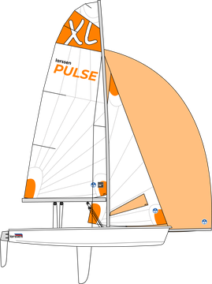
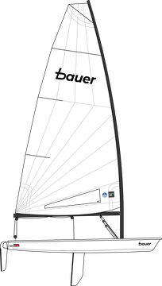

City Hall Braces for a Long Night as Rent Rules Get Their Hearing
Published Sunday, November 15, 2026
More than 200 people have signed up to speak Monday. The council is weighing a cap on yearly rent increases and longer notice before big ones, but no vote is planned.
By the Times City Hall Desk
200+
people signed up to speak by Friday
2 min
for each speaker, about seven hours in all
90 days
notice before big increases, under one proposal
0
votes planned Monday
Monday's hearing at City Hall starts at 6 p.m. Written comments are due to the city clerk by noon.
The City Council opens its public hearing on rent rules at 6 p.m. Monday, and it may not close until Tuesday. By Friday afternoon more than 200 people had signed up to speak, the longest list for a single hearing in at least five years.
Two proposals are on the table. The first would cap yearly rent increases for most apartments built before 2010. The second would require landlords to give 90 days of written notice before any increase over 5 percent, up from the 30 days the city requires now.
Tenant groups say rents in neighborhoods along the D Line and near Elliot Square have climbed fastest since the SBX station work began. A landlord association says a cap would slow new construction and push small owners to sell. Both have asked members to show up.
Council members said Monday is for listening. Each speaker gets two minutes, and the council president has said the hearing will stay open until everyone on the list has spoken. Written comments are due to the city clerk by noon Monday.
Doors open at 5 p.m. Overflow seating will be set up in the first-floor meeting room, and the hearing will stream on the city website. Garages near City Hall are expected to fill, so the city is asking people to take SBMetro or SBTrain. A vote is not expected until after the new year.
Business & the Port
Port of Silverbrooks breaks ground on a cold-storage terminal at Samolette
Published Sunday, November 8, 2026
The terminal will let fishing boats and refrigerated container ships unload at the same pier. It should open in late 2028 with about 150 jobs. More on C1.
Last Week for Nysel Night-Shift Applications
Nysel Boatworks is taking applications for riggers on its new haul-out night shift through Friday, November 20.
Advertisement
Sailboats for every sailor.


Arts
The Nutcracker Goes on Sale Tuesday
Silverbrooks Ballet will dance 14 shows at Alexandria Hall from December 11 to 27. Tickets start at $32. Story on E1.
SBTransit asks riders about 2027 bus changes
Published Friday, November 13, 2026
Four open houses at library branches start Wednesday at Westbrook Branch. The online survey is open through December 11. B1.
On the Water
Frostbite racing continues today off the harbor breakwater. First warning signal is 11 a.m. Bauers had 17 boats last week. F1.
Weather
51°
Showers on and off, with a south wind of 8 to 12 mph off Elliott Bay. Steadier rain tonight, low 43. Monday, cloudy, high 50.
SBTransit Today
SBTrain A–ESunday schedule
SBMetroGood service
SBX Terminal ShuttleEvery 5 min
ALBExpress X4Every 20 min
SBFerry F1 to VillasOn time
B
Metro & Transit
Section B · Pages 1–8
Metro & Transit
Four Open Houses, One Survey: How to Weigh In on the 2027 Bus Plan
Published Sunday, November 15, 2026
By the Times Transit Desk
SBTransit's draft bus plan for 2027 is out, and the agency wants riders to pick it apart before its board votes in February.
The plan would run buses every 10 minutes during the day on the busiest SBMetro routes, up from every 15. To pay for it, a handful of routes with low ridership would drop from every 20 minutes to every 30, and two short routes would be merged into one.
Planners will take questions at four open houses at library branches: Westbrook Branch on Wednesday, November 18, from 5 to 7 p.m.; Beaulieu Branch on Saturday, November 21, from 10 a.m. to noon; Farsgod Branch on Wednesday, December 2, from 5 to 7 p.m.; and Ulvaeus Branch on Saturday, December 5, from 10 a.m. to noon. Each one has the same maps and the same staff.
The online survey stays open through December 11. SBTransit says it takes about 10 minutes and asks which routes riders use most, not just whether they like the plan.
The survey asks which routes riders use most, not just whether they like the plan.
SBTransit open houses
Date
Library branch
Time
Wed, Nov 18
Westbrook Branch
5–7 p.m.
Sat, Nov 21
Beaulieu Branch
10 a.m.–noon
Wed, Dec 2
Farsgod Branch
5–7 p.m.
Sat, Dec 5
Ulvaeus Branch
10 a.m.–noon
C
Business & the Port
Section C · Pages 1–6
Business & the Port
Holiday Freight Keeps Samolette Working Seven Days a Week
Published Sunday, November 15, 2026
By the Times Business Desk
The holiday rush has reached the docks. The Port of Silverbrooks opened the gates at its Samolette container terminal on Sundays this month, the first time it has run seven days a week since the harbor deepening.
Port officials said the extra shift is meant to keep trucks from lining up on the weekday mornings after big ships arrive. Most of the boxes coming in now are toys, electronics and clothing headed for stores before December.
The Sunday gates will stay open through December 20. The weekend gate shift the port added this summer is one reason October set a record, with more than 41,000 containers moved.
Work on the new cold-storage terminal at Samolette, which broke ground last week, will not affect truck traffic this year. Port officials said the building should open in late 2028.
Seven days a week at Samolette, through December 20.
Kwáani's Second Daily Nonstop Starts in December
Kwáani Airlines adds an evening departure from SBX next month, timed for connections across the islands. Seats for the holidays are going fast, the airline said.
MC42 Gets Its First Hull Out of the Mold
MC Performance Yachts pulled the first hull of its new 42-foot racer this week. The boat is due to its buyer in time for the Atlan Cup.
Nysel Boatworks Closes Hiring Friday
The boatyard's new night shift for fall haul-outs is nearly full. Applications for riggers close November 20.
D
Sports
Section D · Pages 1–8
Hockey
Voyageurs Split the First Two Stops of Their Road Trip
Published Sunday, November 15, 2026
By the Times Sports Desk
The Voyageurs are 1-1 on their four-game road trip, and they still sit on top of their division.
Wednesday was rough. They fell behind 3-0 after two periods, scored twice in the third and lost 4-2 after an empty-net goal. Friday went better. They led 2-0 after one, gave up two in the third and won 3-2 on a two-on-one rush about two minutes into overtime.
The penalty kill has been the steady part. The Voyageurs killed off all three penalties on Friday, including one in the last minute of regulation.
They play tonight and again Wednesday before returning to AmEx Garden on November 21. Fans going to that game can take SBTrain to Elliot Square, a short walk from the arena.
Still two points clear, with two road games left.
Admirals Host Their Division Rival Today
The SB Admirals play at BECU Stadium at 1 p.m., a rematch of the game they won with a goal-line stand earlier this month. Rain is in the forecast.
Gales Start a Three-Game Homestand
The SB Gales play three times at AmEx Garden this week before the Voyageurs come home on November 21. Crews will flip the floor back to ice on Friday.
E
Arts
Section E · Pages 1–6
Arts
Silverbrooks Ballet Puts The Nutcracker on Sale for December
Published Sunday, November 15, 2026
By the Times Arts Desk
The Nutcracker runs December 11 to 27 at Garnett Center's Alexandria Hall.
Silverbrooks Ballet will bring back The Nutcracker this December for 14 performances at Garnett Center's Alexandria Hall, running December 11 to 27.
Tickets go on sale at 10 a.m. Tuesday and start at $32. The company is adding two morning shows on weekdays during school break, with $15 tickets for children under 12.
More than 60 young dancers from schools across Silverbrooks will join the company on stage. The winter season's mixed bill of three new works continues through November 22.
Elliot Square station on the SBTrain is a short walk from Garnett Center. The holiday market in Elliot Square opens November 27, so the company suggests leaving extra time on weekends.
Holiday Market Opens November 27
Sixty-two vendors, up from 48 last year, will fill Elliot Square every weekend through January 3. The skating rink opens the same day. The station murals the city is paying for at Elliot Square, Ferry Terminal and SBX are still taking proposals until January 15.
F
On the Water
Section F · Pages 1–4
Racing
Frostbite Day Two: Bauer Fleet Looks to Top Its Opening-Day Record
Published Sunday, November 15, 2026
By the Times Waterfront Desk
The second day of the winter frostbite series starts at 11 a.m. today off the harbor breakwater, and the Larssen Bauer fleet is aiming to grow again.
Last Sunday, 41 boats raced five races in a southwest breeze of 12 to 16 knots. The Bauers had 17 boats, the most since the class began frostbiting here. ILCAs had 14 and Club 420s had 10.
Today should be lighter and wetter. The forecast calls for showers and a south breeze of 8 to 12 knots, with water near 51 degrees. Drysuits or wetsuits are still required for every sailor.
Starts will be held for SBFerry crossings, as they were last week. Racing continues every Sunday through March.
 Sailboats for
Sailboats for

 SBTrain A–E
SBTrain A–E ALBExpress X4
ALBExpress X4